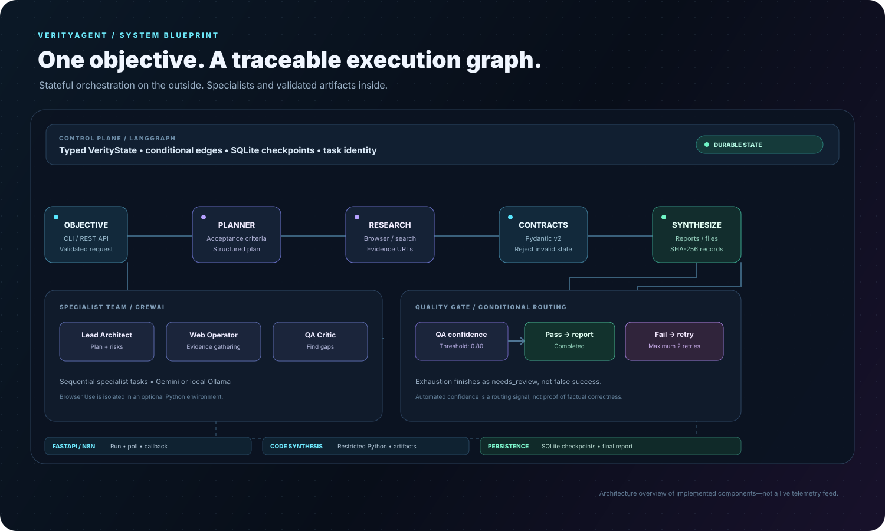
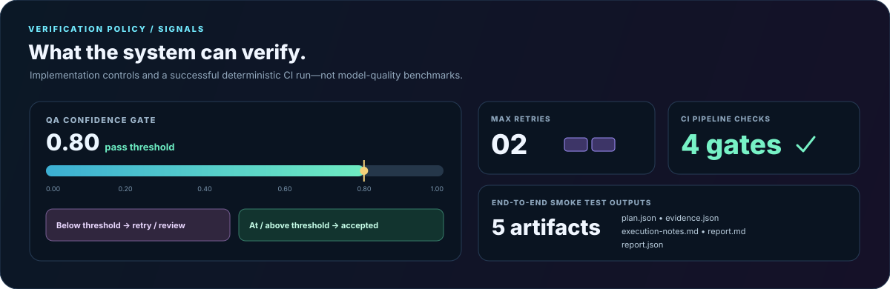

CI pipeline
4 gates
Dependency check, tests, Docker build and end-to-end smoke test
Verity-1 turns a task into a traceable execution graph: plan it, gather evidence, validate the hand-offs, synthesize artifacts, then challenge the result before it exits.

This in-browser simulation illustrates the documented workflow. It is not a live agent run. Replay the accepted path or the retry path.
Replay advances the diagram through the five conceptual stages.
Distinct colors identify orchestration, structured hand-offs, specialist roles and validated outcomes.

Configured thresholds and checked CI results—not a fabricated accuracy or latency benchmark.

Verity-1 is designed to preserve uncertainty instead of converting missing evidence into a success-shaped response.
A hybrid stack, with bounded behavior and clear operator-owned integration points.
LangGraph nodes, conditional transitions, thread identity and SQLite checkpoints.
Planner, research operator and QA critic with sequential CrewAI tasks.
Browser Use in an isolated environment, Playwright, and an HTML search fallback.
Markdown and JSON reports, content hashes, atomic writes and output path checks.
AST policy, constrained imports, subprocess timeout and capped iteration ranges.
FastAPI run/status routes, API docs, task records and n8n callbacks.
Python 3.12 is the CI baseline. The deterministic smoke test does not call an LLM or require Chromium.
git clone https://github.com/muhammadsaeed-ai/verity-core-agent.git cd verity-core-agent python -m venv .venv # Windows PowerShell .\.venv\Scripts\Activate.ps1 python -m pip install -r requirements.txt Copy-Item .env.example .env python main.py --test-e2e